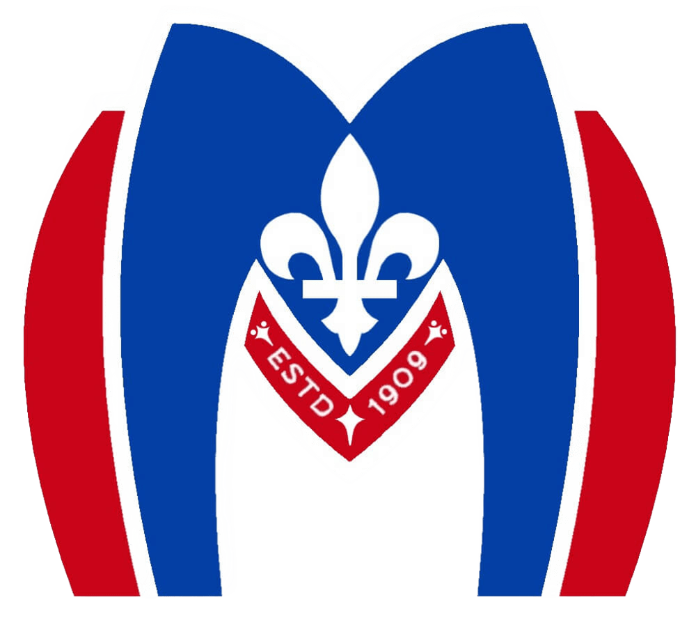
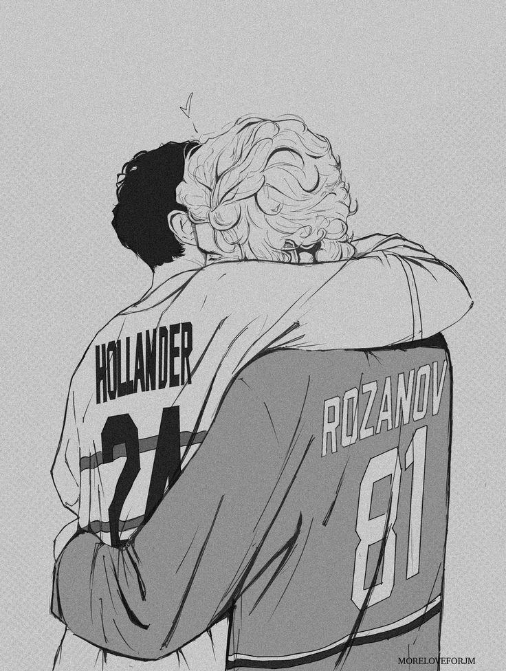
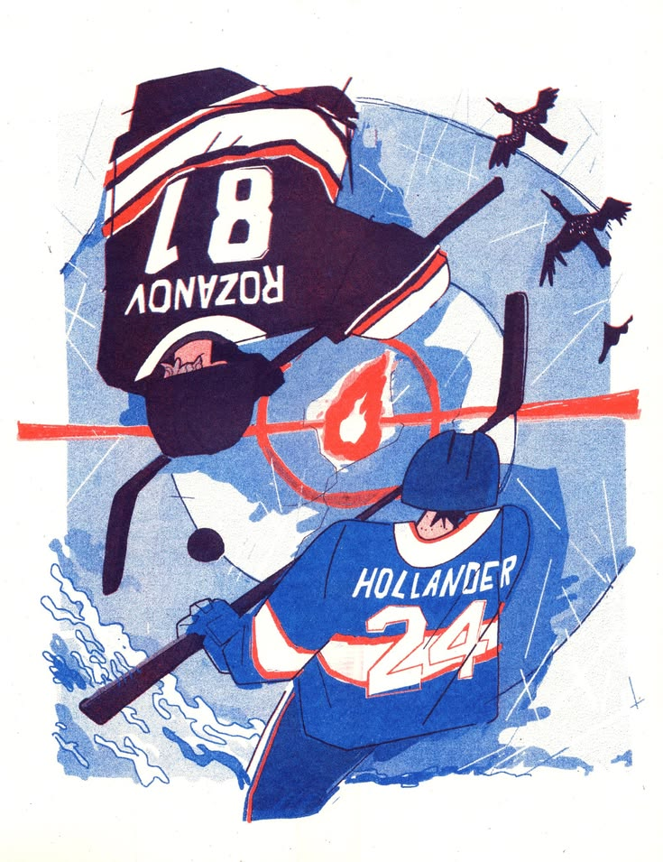
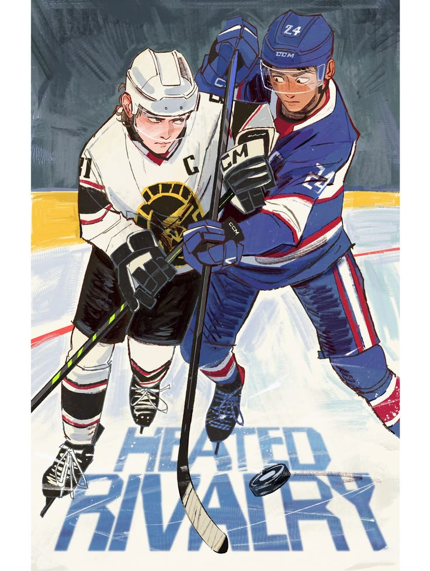

Ilustración por: @moreloveforjm

Ilustración por: echo_of_iya

Ilustración por: sublme_ on
Este sitio web es un trabajo académico desarrollado para la materia de Edición Digital en la Universidad Jorge Tadeo Lozano. El proyecto explora las posibilidades de la arquitectura de información aplicada a la industria editorial.
Creado por: Lorel Muriel
UTADEO
Edición Digital